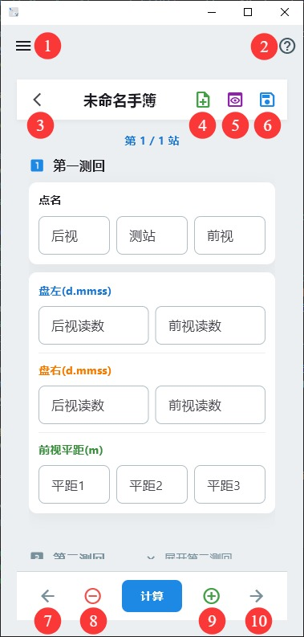

数测通帮助
数字测图内外业一体小工具：外业观测记录 → 内业平差计算 → 常用换算，数据本地归档。
快速上手
- 安装运行：适用安卓手机。首次打开在「设置」里勾选要用的模块（外业观测 / 内业平差 / 空间换算）。
- 录数：选模块 → 填表。角度（如水平角、垂直角、方位角、方向值）用
度.分秒，如 112.3045 = 112°30′45″。也支持逗号分隔文件导入（UTF-8 或 GBK，自动跳过 # 注释行与空行）。
- 算数：点「计算 / 平差」。重点看：2C、归零差、指标差、闭合差、
σ₀ 单位权中误差、点位中误差 等有没有告警或超限。长按计算结果可以选取并复制。
- 存盘：每个模块都有保存功能，保存结果在「存储数据检索」里以列表显示，长按可以查看、更名、删除；「数据备份」可以 备份 / 恢复（本地
survey_records.json）。
模块一览表
| 模块 | 功能 |
|---|
| 水平角计算——测回法 | 测回法水平角记录、计算、2C 检核、平距平均 |
| 水平角计算——方向观测法 | 方向观测法水平角记录、计算、归零差/2C互差/方向较差 检核 |
| 垂直角计算 | 垂直角记录、计算、指标差 检核、斜距平均 |
| 四等水准测量 | 后-前-前-后观测程序记录、计算 |
| 支导线计算 | 单一支导线计算 |
| 导线平差 | 单一闭合 / 附合导线简易 / 严密平差 |
| 水准平差 | 单一闭合 / 附合水准路线简易 / 严密平差 |
| 三角高程平差 | 单一闭合 / 附合三角高程路线简易 / 严密平差 |
| 平面控制网平差 | 边角网 / 导线网 / CPIII 平面网 / 测角网 / 测边网 严密平差 |
| 水准网平差 | 水准网 / CPIII 高程网 / 三角高程网 严密平差 |
| 坐标正反算 | 坐标正算 / 坐标反算 |
| 交会计算 | 前方交会 / 后方交会 / 侧方交会 |
| 高斯正反算 | 高斯正算 / 高斯反算 |
| 基准换算 | 七参数计算（Bursa-Wolf、最小二乘迭代法）/ 坐标转换 |
| 图幅编号计算 | 单点计算 / 区域计算 / 图幅编号计算 |
按钮说明

软件界面按钮一览
- ①-“菜单”;②-“帮助”;③-“返回”;④-“新建手簿”;⑤-“预览”;⑥-“保存手簿”;⑦-“上一站”;⑧-“删除本站”（删除光标所在测站）;⑨-“新增一站”（在光标所在测站后新增一站）;⑩-“下一站”
目录
一、入门篇
1. 软件定位与适用场景
数测通面向数字测图内外业一体：外业观测手簿记录、内业各类平差计算、常用换算，无需联网，数据全部本地保存，安全有保障。
2. 首次使用
安卓手机上直接启动。在「设置」里勾选要用的模块（外业观测记录 / 内业平差计算 / 空间坐标换算），不需要的可以隐藏，界面更干净。
3. 通用录入约定（★重点）
- 角度格式：一律
度.分秒，如 112.3045 = 112°30′45″，严禁预转十进制度再传入。
- 文件导入：支持 UTF-8 或 GBK 编码、逗号分隔；自动跳过
# 注释行与空行。
- 已知点 / 未知点：在各模块里按界面标记填写，已知点参与确定基准，未知点为平差对象。
二、模块操作篇
逐模块统一四问：何时用 / 怎么用 / 看什么结果 / 常见坑。
2.1 水平角计算——测回法
何时用
用全站仪 / 经纬仪按「测回法」测水平角——后视方向、前视方向分别读盘左、盘右各一次（各称半测回，即上半测回、下本测回），需要算水平角、检核 2C、多测回取平均，并顺带算平距。
怎么用
- 每站录后视方向、前视方向的「盘左读数」「盘右读数」，格式一律
度.分秒（如 0.0030 = 0°00′30″）。
- 要两测回：点开「展开第二测回」录第二测回，盘左 / 盘右需成对。
- 想算平距：填「前视平距 1 / 2 / 3」，软件取平均并检核最大较差。
看什么结果
- 上半测回 / 下半测回方向值；
- 后视 2C、前视 2C（2C = 盘左 − 盘右 ±180°，超限会提示）；
- 前视平均平距、最大较差（mm）；多测回时给「最终平均平距」。
常见坑
- 角度必须
度.分秒，别填十进制度——否则结果全飞；
- 盘左、盘右要成对录入，缺一则水平角算不出；
- 平距不填则只出角度、不出平距平均与较差。
2.2 四等水准测量
何时用
按四等水准「后-前-前-后」双面尺法做外业手簿记录。逐站自动检核限差，并取黑红面中数得每站观测高差。
怎么用（每站）
- 点名：后视点名、前视点名（链式衔接：第 1 站后视须等于起始点名，后续每站后视等于上站前视）。
- 后尺读数（mm）：上丝、下丝、黑面中丝、红面中丝。
- 前尺读数（mm）：上丝、下丝、黑面中丝、红面中丝。
- 读数一律按 mm 录入（如 1.432 m 录
1432）；上/下丝用于算视距，黑/红中丝用于算高差。
看什么结果（逐站自动算，限差 ✓/✗）
- 后视距离 / 前视距离（≤ 50 m）；
- 前后视距差（≤ 5 m）、视距累积差（≤ 10 m）；
- 后尺 / 前尺 黑红面读数差（≤ 3 mm）——软件自动识别红面常数 K（4687 / 4787）；
- 黑面高差、红面高差、黑红面所测高差之差（≤ 5 mm）；
- 观测高差 = 黑红面中数（m）。
常见坑
- 读数按 mm 录，别按 m；上/下丝和黑/红中丝别填混栏。
- 红面常数 K 不用手填，软件按黑红差自动判别；若提示本站与邻站 K 不一致，多半是拿错尺或红面填错。
- 黑红面读数差、高差之差超限，说明读尺 / 扶尺有问题，先重测，别硬过。
2.3 导线平差
何时用
单一闭合导线或附合导线，做简易平差（检核闭合差）或严密平差（算各点坐标与点位中误差）（多条导线构成的导线网请见 2.5。）。
怎么用
- 已知数据：起始点名 + 起始坐标（x, y）、起始方位角（
d.mmss）。附合导线还要填附合点名、定向点名、附合点坐标、附合方位角。
- 勾「闭合导线」走闭合；勾「严密平差」走严密，需填测角中误差 mβ（″）。
- 逐段录：测站点、前视点、转折角（
d.mmss）、边长（m）（最后一站边长空着不填）。可从测回法手簿导进来，也可从逗号分隔的外部文件导入（测站点,前视点,角度,边长）。
看什么结果
- 简易：各边方位角平差值、各点坐标平差值、方位角闭合差 fβ 与限差、位置闭合差 f、导线全长相对闭合差 1/k（超限标红）。
- 严密：各水平角、平距平差值、各点坐标平差值与点位中误差、单位权中误差 σ₀。
常见坑
- 测站点名、前视点名按链式衔接（第 1 站测站点须等于起始点名，后续每站测站点名等于上站前视。）
- 对于附合导线：倒数第 2 站的前视点等于附合点，最后一站的测站点、前视点分别是附合数据中的附合点、定向点。
- 对于闭合导线：倒数第 2 站的前视点等于起始点，最后一站的测站点、前视点分别是起始点、第 1 站前视点。
- 转折角按
d.mmss；默认按左角（方位角 = 前一边方位角 + 左角 ± 180°），右角要换算后再录。
- 附合导线起、终都要有已知方位角 / 坐标，只给一端算不了附合；若起或终有两个已知点，先按“坐标反算”计算出坐标方位角，再来计算。
- 严密平差要填 mβ / a / b；若填错，σ₀ 与点点位中误差随之失真。
- 相对闭合差超限，先查边名 / 角名是否串站、已知点是否输反。
2.4 水准平差
何时用
单一附合或闭合水准路线（内业平差）：外业已测得各测段高差，在这里做闭合差检核，或进一步严密平差求各点高程与中误差。（多路线构成的水准网请见 2.6。）
怎么用
- 起算数据：起始点名 + 起始点高程（m）。
- 勾「闭合水准路线」走闭合（不填附合点）；不勾则填附合点名 + 附合点高程（m）作为闭合检核。
- 勾「严密平差」算 σ₀ 与各测段、各点中误差。
- 逐站录：后视点名、前视点名、观测高差（m）、距离（km）。可以从四等水准手簿导进来，也可从逗号分隔的外部文件导入（后视点名,前视点名,观测高差,距离）。
看什么结果
- 简易：各测段高差平差值、各点高程平差值、高程闭合差 fh（mm）与限差 ±20√L（L = 路线总长 km）；超限标红。
- 严密：各测段高差平差值 + 中误差、各点高程平差值 + 中误差、单位权中误差 σ₀（mm）。
常见坑
- 后视点名、前视点名按链式衔接（第 1 站后视点须等于起始点，后续每站后视等于上站前视。）
- 附合路线最后 1 站前视等于附合点，闭合路线则等于起始点。
- 高差按 m、距离按 km——限差公式 L 用的是总公里数，距离填成 m 会令限差虚高、闭合差误判。
- 闭合路线别填附合点；附合路线必须填附合点高程，否则没东西检核。
- fh 超限先查高差符号、点名是否衔接错位，别急着改数。
2.5 平面控制网平差（★重点★难点）
何时用
边角网 / 导线网 / CPIII 平面网 / 测角网 / 测边网 / 等，含方向、边长观测的严密平差。自动按观测类型定算：纯测角、纯测边、边角混合都支持。
怎么用
- 已知点坐标：至少 1 个（≥2 个或加已知方位角 / 边长才能完整定向）。已知点名不能为空，x、y 须完整。
- 已知方位角 / 已知边长：可选，合并一类填「起点、终点、方位角(d.mmss) 或 边长(m)」，用于加强基准。
- 测角中误差 mβ（″）、测距固定误差a / 比例误差b：必填，决定方向、边长观测权。
- 观测数据：每行「测站, 照准点, 方向值(d.mmss), 边长(m)」，方向值与边长至少填其一。可逗号分隔文件导入，或从方向观测法手簿一键导入。
看什么结果
- 观测值平差值：方向 DMS（0.01″）、边长（m，0.0001）。
- 未知点坐标平差值。
- 未知点精度：点位中误差 mP、误差椭圆长半轴 E / 短半轴 F（cm）、长轴方位 φ（°）。
- 精度评定：单位权中误差 σ₀、多余观测 r、观测方程数、未知数 t、约束 c。
常见坑 / 边界（务必看清）
- 方向值录入原始 d.mmss，严禁预转十进制度再录——否则整网发散。
- 纯测边网不要混入方向观测定权（软件自动用长度基准）；纯测角网无需边长。
- σ₀ 退化（>3×mβ）→ 橙色告警：此时可点「粗差探测」→「稳健平差（IGG III 选权迭代）」降权 / 剔权后重平差；正常网不显示该按钮。
- 稳健平差只治真粗差，多为网形弱 / 系统误差 / 精度参数偏差，稳健未必有效，别盲目剔权。
- 自由设站 / CPIII 长狭网：已知点要足够且分布合理，否则初值起算不稳，长边会把尺度误差沿网摊开。
2.6 高程控制网平差
何时用
由多条水准路线构成的高程控制网（含已知高程点、未知点、附合环），做间接平差求全网高程。也含 CPIII 高程网。
怎么用
- 已知高程点（可多行）：点名 + 高程（m）。已知点越多、分布越匀，网越强。
- 观测路线（多卡片）：起点、终点、观测高差（m）、距离（km）/ 测站数。
- 严密平差按距离定权（每公里单位权，与单路线一致）或测站数定权。
看什么结果
- 平差后各路线高差平差值 + 中误差（mm）、平差后各点高程平差值 + 中误差（mm）。
- 单位权中误差 σ₀（mm）。
常见坑
- 距离填 km（定权用）；高差符号按「后视 → 前视」为正。
- 已知点至少 1 个；点多精度高、冗余足。
2.7 基准换算（Bursa-Wolf / 最小二乘迭代法）
何时用
两套空间直角坐标系（如 CGCS2000 与独立工程系、或不同基准 / 投影）间的坐标转换，含平移、旋转、尺度三个自由度。
怎么用
- 选模型：布尔莎模型（小角一阶，最常用）/ 最小二乘迭代法（适合大倾角求参）。
- 公共点 ≥ 3：每个公共点填「原系 X/Y/Z + 目标系 X/Y/Z」共 6 项，可动态增删。公共点本身是两套坐标都已知的点，不是只知一套。
- 待转点：录入原系坐标，换算出目标系坐标。
看什么结果
- 七参数：ΔX/ΔY/ΔZ（平移，m）、εX/εY/εZ（旋转角，″）、m（尺度，ppm）。
- 单位权中误差 σ₀。
- 转后坐标（目标系，4 位小数）。
常见坑
- 公共点 ≥ 3 且分布均匀、覆盖测区，别全堆一处；公共点精度要可靠，否则参数带偏。
- 小角模型够用就不必用迭代法；只有大倾角才选「最小二乘迭代法」。
- 待转点只填原系坐标即可，目标系由七参数算出，别手填。
2.8 其他计算模块速查
以下模块较轻量，统一「录数据 → 看结果」，角度均 度.分秒。
| 模块 | 何时用 / 怎么用 | 看什么 |
|---|
| 水平角方向观测法 | 零方向 + 目标，盘左 / 盘右读数。算归零方向值、2C 互差（限 13″）、归零差（限 8″）。要求≥2 方向，>3 方向时强制归零闭合读数。 | 归零后方向值、限差 ✓/✗ |
| 垂直角计算 | 盘左 / 盘右竖盘读数（d.mmss），一个目标一测回。 | 垂直角、指标差、天顶距 |
| 支导线计算 | 起始坐标 + 起始方位角，逐站水平角（左角,d.mmss）+ 边长，推算各点坐标方位角与坐标。可逗号分隔导入（测站点,前视点,角度,边长）。 | 各点坐标方位角与坐标 |
| 三角高程平差 | 逐站录垂直角 / 斜距 / 仪器高 / 觇标高，附合 / 闭合，严密平差按 RSS 定权（含 mβ、ma、mb）。 | 高差平差值 / 高程平差值 + 中误差、σ₀ |
| 坐标正反算 | 正算：A 点坐标 + 平距 + 方位角 → P 点坐标；反算：A、B 坐标 → 平距 + 方位角。 | 坐标 / 平距 / 方位角 |
| 交会计算 | 前方（A,B 坐标 + ∠A,∠B）、后方（A,B,C 三点 + ∠APB,∠BPC）、侧方（A,B + ∠PAB,∠APB）。点须逆时针排列。 | P 点坐标 |
| 高斯正反算 | 高斯正算（经纬度 → x,y）、高斯反算（x,y → 经纬度）、坐标换带（带号 / 中央经线联动，3°/6° 带，自然 / +500km / 统一坐标）。 | 平面坐标 / 经纬度 |
| 图幅编号 | 单点（经纬度 + 比例尺 → 图幅号）、区域（四角经纬度 + 比例尺 → 图幅范围）、由图幅号反查坐标。 | 图幅编号 / 经纬度 |
三、数据管理篇
3.1 保存 / 浏览
- 各模块「保存」把当前手簿写入本地
survey_records.json（位于软件数据目录）；同名会提示覆盖，可改名另存。
- 「存储数据检索」里可载入历史手簿，长按可以查看、更名、删除。
3.2 模块显隐
- 「设置」里勾选 / 取消各模块。不用的模块隐藏掉，主界面更干净，也避免误操作。
3.3 记录检索
- 按手簿名或类型（外业观测 / 内业平差 / 常用换算）检索历史记录。
3.4 导入 / 导出
- 导入观测数据：子模块左下角的“导入”图标，从外业手簿一键导入观测值；部分模块（如平面控制网）也支持从逗号分隔文本文件（UTF-8 / GBK，自动跳过
# 注释行与空行）批量导入。
- 导出成果至文件：子模块右下角的“导出”图标，把计算结果 / 平差成果（控制点坐标、点位中误差、
σ₀ 等）导出为文本文件，便于归档或转入其他软件。
3.5 备份 / 恢复
- 定期把
survey_records.json 复制一份到别处做备份——换机器 / 重装前务必先备份。
- 需要时可以随时恢复先前的备份数据。
四、附录
- 版本历史：V2.0。
- 联系反馈：QQ 151327986。问题、建议、bug 都欢迎，最好附上数据与截图。